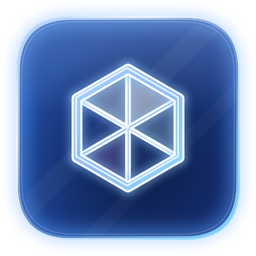
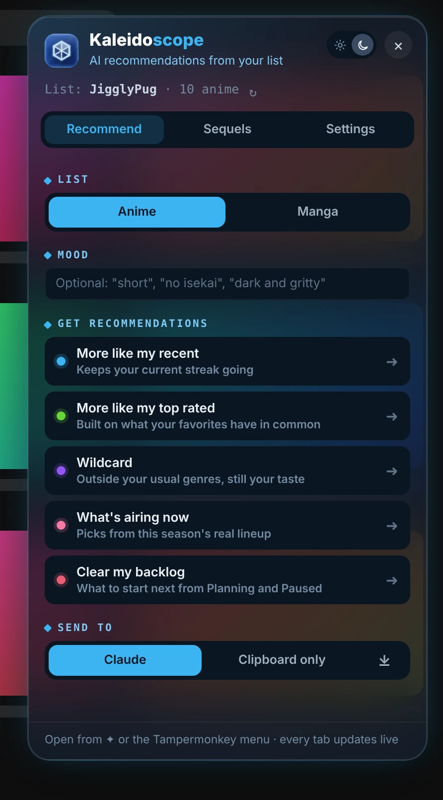
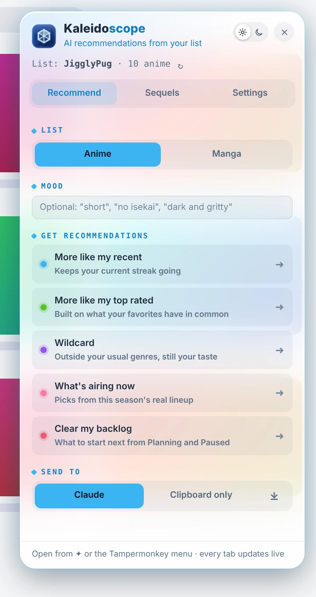
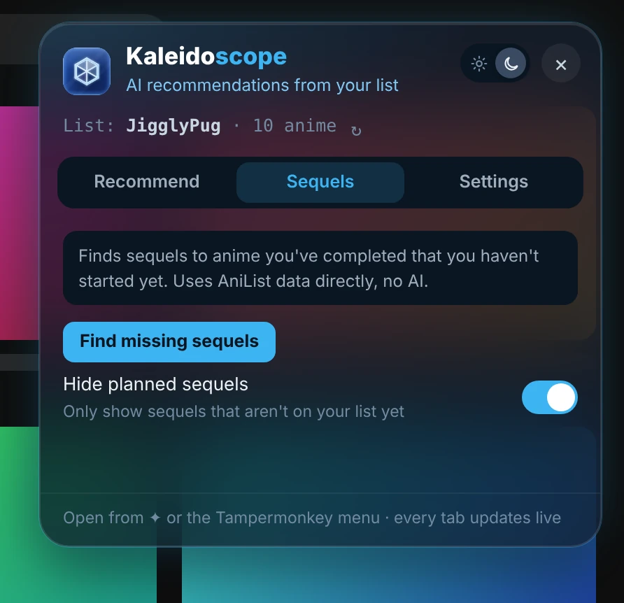
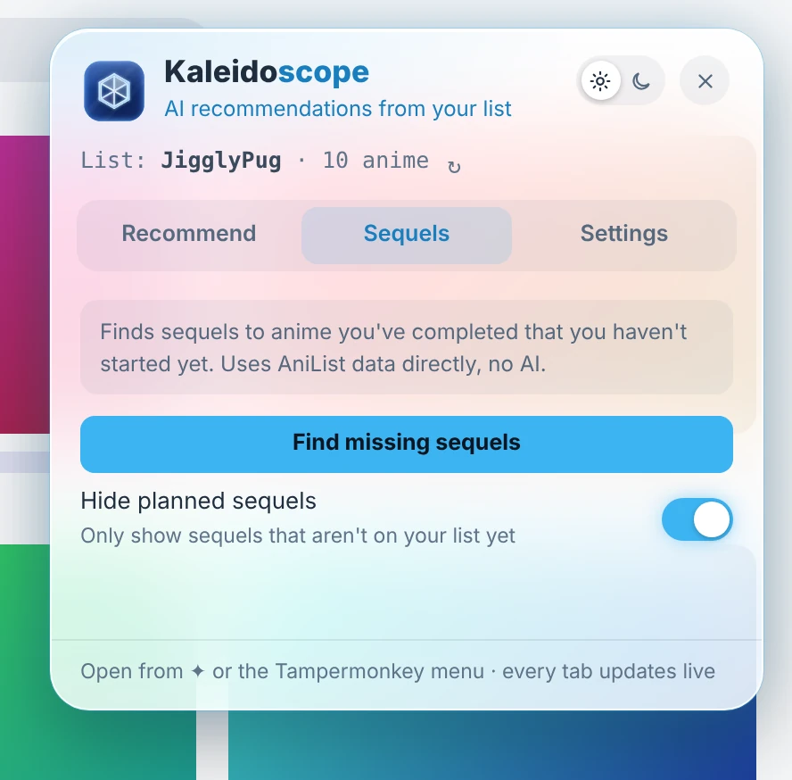
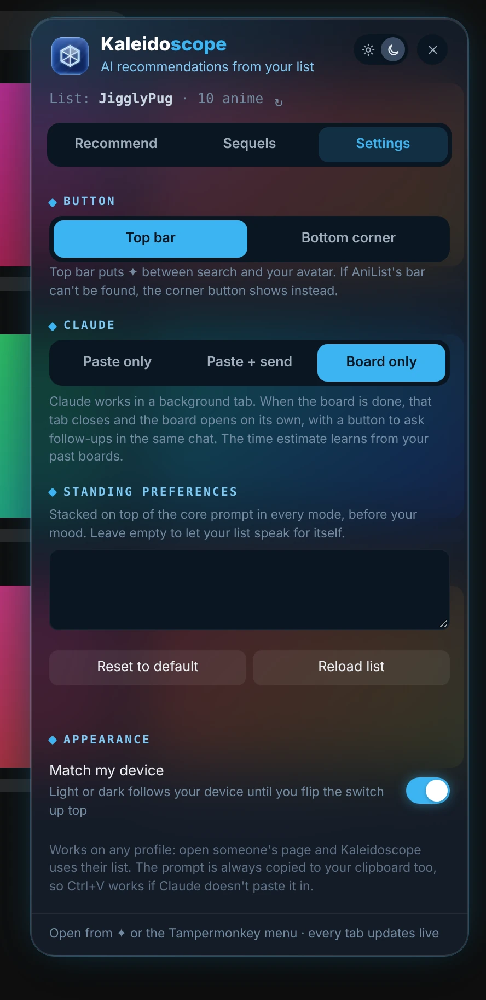
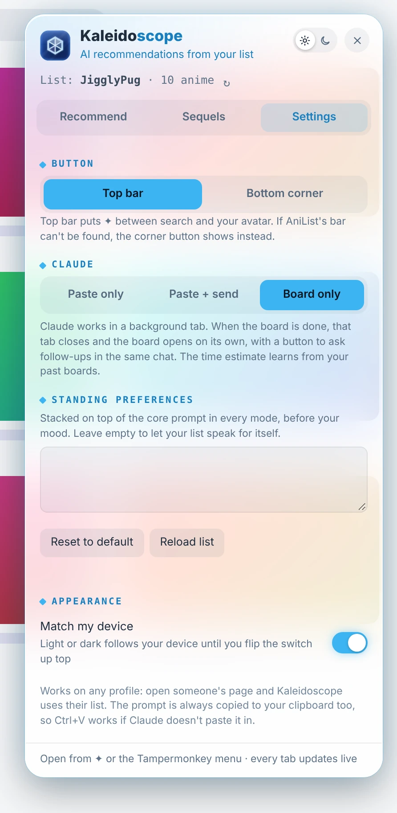

Kaleidoscope
Your AniList list, turned into your next favorite.
Click the ✦ button on AniList and pick a mode. Kaleidoscope has Claude build a recommendation board from your list in the background, then opens it for you.


Five ways to find your next show
More like my recent, more like my top rated, wildcard, what's airing now and clear my backlog. For anime and manga.
Built from your actual list
Your AniList history drives every recommendation, with an optional mood like "short" or "no isekai".
Hands it to Claude
Claude builds a recommendation board in the background and Kaleidoscope opens it for you. Or just copy the prompt.
Sequel finder
Finds sequels to things you've finished but haven't started, straight from AniList.
Your standing preferences
Taste notes added to every prompt, if you want them.




2.10.12 2026-11-10 Damaged saved data can't break the panel or the board page.
2.10.11 2026-11-10 Closing the Claude tab before the board is ready ends the job right away, with a message.
2.10.10 2026-11-10 When AniList is slow, down or unreachable, the panel says so plainly.